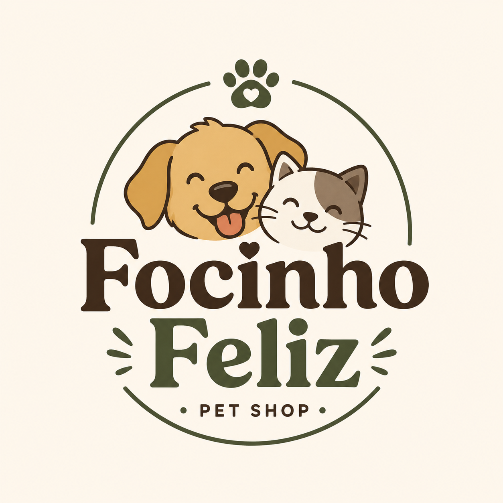
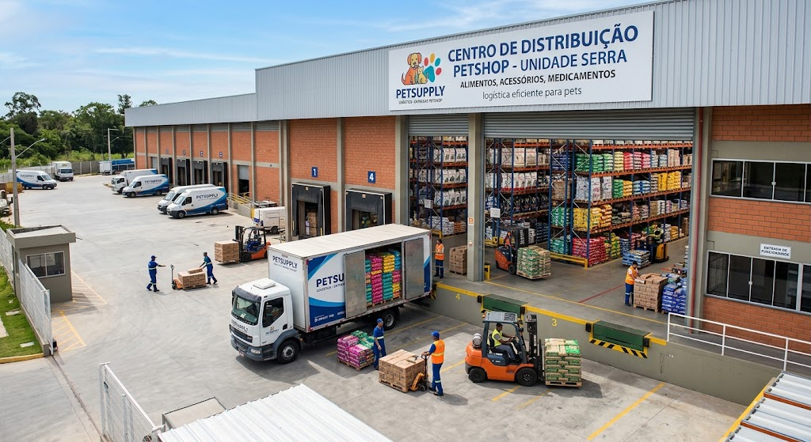
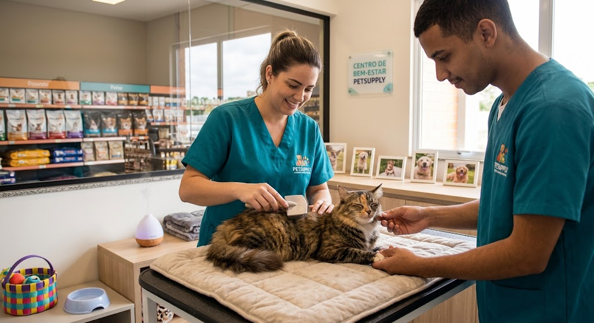

Focinho FelizA Focinho Feliz nasceu em 2015 com o sonho de oferecer cuidado de qualidade para cães e gatos em todo o Brasil. Hoje, atendemos mais de 50 mil famílias e trabalhamos com veterinários parceiros em 12 estados.
Nosso centro de distribuição fica em Vila Velha, no Espírito Santo. De lá, saem os pedidos que chegam à casa dos tutores em até 3 dias úteis.


Cuidado, carinho e praticidade para o seu pet.
📞 (27) 99999-8888
✉️ contato@focinhofeliz.com.br
📍 Vila Velha - ES